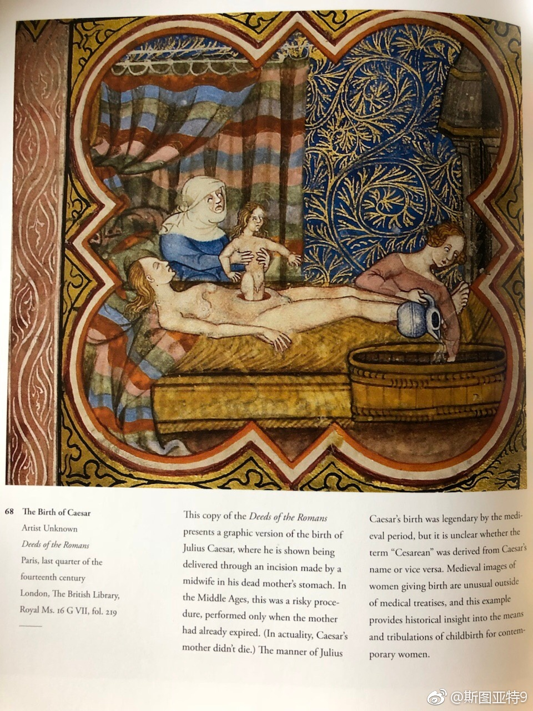

三阶教，一个讲末世论的佛教宗派。算是中国自产宗教派别里少有的了吧。隋唐时期盛极一时，被政府、儒家、道教和和佛教其他宗派联合起来极力打压三百年终于将其歼灭。说起来，三阶教的思想很有点基督教的意味：讲末世论、讲原罪和忏悔，反对偶像崇拜（“一切佛像是泥龛”），讲众生皆是佛，大力发展信众捐款而将款项在修寺院外大幅用于开办慈善事业……真是太有意思了。它的覆灭也太有意思了，盛世王权容不下讲现在时代是个恶世、人都已坏掉的话，王权也害怕一个掌管如此多钱财对社会有如此大影响力非政府组织。所以，如此有革命性的宗派也命不过三百年。

斯图亚特9
2018-02-18
斯图亚特9
2018-02-18
原来曾经有广泛的传说认为凯撒生于剖腹产，于是剖腹产被你改名为“Cesarean”，或者反之，认为凯撒因为剖腹产而得名。搜索了一下，看来现在认为这是个谬传……
- 